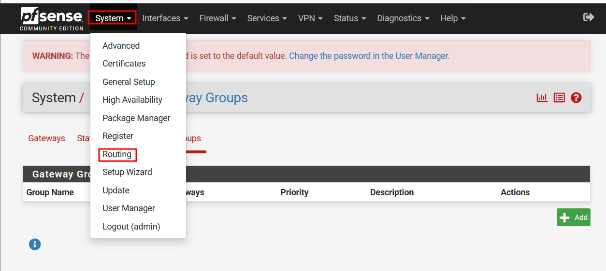

1 Contexte & objectif
Le failover, ou basculement, est un mode de fonctionnement de secours qui consiste à basculer automatiquement sur une base de données, un serveur ou un réseau placé en attente si le système principal tombe en panne ou est arrêté le temps d'une maintenance. Le failover est une fonction extrêmement importante sur les systèmes critiques qui doivent rester accessibles à chaque instant : il redirige de manière transparente toutes les requêtes du système injoignable vers le système de secours, lequel imite l'environnement du système initial.
Ici, l'objectif est de configurer le basculement et de simuler la coupure d'un des liens externes. Les deux interfaces externes correspondent à deux réseaux pédagogiques distincts au sein de l'infrastructure de labo.
ℹ
Cette procédure s'appuie sur une configuration de base de pfSense déjà en place (voir la procédure « Pare-feu pfSense » pour l'installation initiale).
2 Prérequis
- Un pare-feu pfSense déjà installé et configuré.
- Un client dans un réseau local interne, virtualisé avec Hyper-V.
- Deux interfaces WAN distinctes (2 réseaux externes différents).
3 Procédure
Étape 1 — Préparer les interfaces
Il est nécessaire dans un premier temps que le pare-feu possède 3 interfaces :
- 2 externes en DHCP.
- 1 interne avec une adresse IPv4 fixe.
ℹ
Il se peut qu'une ou plusieurs interfaces soient désactivées. Cliquez sur « Enable interface » sur l'interface en question. Vous pouvez également la renommer pour la reconnaître plus facilement.
Étape 2 — Créer le groupe de passerelles
Se rendre dans System → Routing :

Routing sur pfSense" />
Puis créer un nouveau groupe dans Gateway groups :
Il faut obligatoirement :
- Attribuer un nom significatif au groupe de passerelle.
- Définir la priorité de la passerelle. La valeur va de 1 à 5 : la plus petite valeur a la priorité la plus haute. La valeur Jamais permet d'exclure une passerelle du groupe.
- Le niveau de déclenchement, qui définit comment la passerelle gère différents évènements :
- Member Down : lorsque le lien internet est rompu ou inaccessible.
- Packet Loss : selon un seuil d'alerte défini dans les paramètres avancés.
- High Latency : selon un seuil de latence défini dans les paramètres avancés.
- Packet Loss or High Latency : mode hybride combinant les deux critères.
Configuration retenue pour le groupe de passerelle :
Résultat obtenu après sauvegarde :
Étape 3 — Appliquer le groupe de passerelles
Il faut maintenant renseigner ce groupe de passerelle dans le menu System → Routing (la valeur par défaut est « Automatic ») :
Étape 4 — Configurer le NAT
Dans la section Firewall → NAT → Outbound, choisir le mode manuel puis laisser apparaître les adresses concernant le réseau local interne. Les règles sont recréées automatiquement.
4 Vérification
Depuis un client, effectuer un tracert vers 8.8.8.8 avec les deux interfaces activées :
Débrancher ensuite la carte principale, puis effectuer un tracert vers 1.1.1.1 pour vérifier que la seconde interface externe prend le relais :
// résultat attendu
La passerelle utilisée par le tracert change et correspond au second réseau pédagogique de la carte EXT2 : le basculement fonctionne, la coupure du lien principal est transparente pour le client.
5 Points d'attention & retour d'expérience
→
La priorité (1 à 5) définit l'ordre de bascule : bien vérifier que la passerelle principale a la valeur la plus basse.
→
Le niveau de déclenchement « Member Down » suffit pour une simple coupure de lien ; les seuils de latence/perte de paquets demandent un réglage plus fin selon la qualité des liens WAN.
→
Penser à repasser le NAT Outbound en mode manuel dès qu'un groupe de passerelles est utilisé, sinon les règles générées automatiquement peuvent ne pas correspondre au bon WAN.